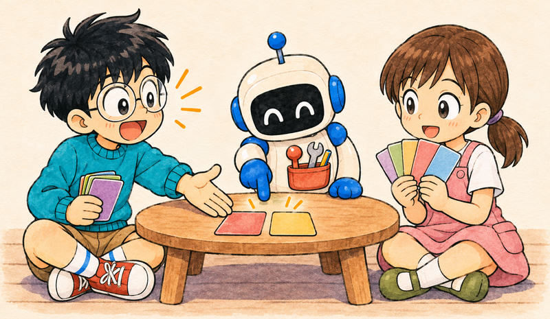

Feature 03 · ARTICLE · 2026 11
Scaling Git at OpenAI
Codex lets our engineers do far more work in parallel, and the systems behind our monorepo couldn’t keep up: fetches and pushes slowed, merges failed, and reliability at times fell below 90%. We built Pando, a new Git backend, without changing how our team uses Git. It gives up two things most Git servers assume: a consistent snapshot of every ref at once, and a unique packfile for every client. In exchange, pushes to different branches proceed in parallel, and the same stored packs serve many readers from cache. Pando now powers all development in OpenAI’s monorepo, has cut median push latency by nearly 5x, and delivers nearly a petabyte of Git data per day.

Why keep Git
Codex means more branches, pushes, merges, fetches and clones, and these compound. One engineer now has several changes ready for CI at once, and each push can set several jobs fetching the same commit. Developers have adapted their tools around Git for more than two decades, and building on it meant our client improvements could be useful beyond OpenAI. So we kept the workflow and rebuilt the backend for two things: many writers pushing to different branches, and many readers fetching the same history.
How Git moves history


A repository is a graph of immutable objects (blobs, trees, commits, tags), each identified by a hash of its type and contents. Refs, such as branches and tags, point to commits. On a fetch, the client names the commits it wants and those it has, and the server sends the difference as a packfile. On a push, the client uses the refs the server advertises to avoid sending objects the server already has, so the pushed pack can depend on objects it doesn’t contain.
A replica must hold every object reachable from a ref before it can serve that ref, and competing updates to one branch must be coordinated. Systems that impose a single order on all writes to a repository can make pushes to unrelated branches wait on one another.
The conventional designs
Three-phase commit. Several replicas keep a complete copy. An incoming pack goes to all of them, and a majority must accept the ref update over multiple rounds of communication. Reads are local and every client sees a consistent view of all refs. But refs update one at a time, the quorum puts replica disks and network latency on the push path, and replicas must keep up with incoming packs as well as reads.
Write-ahead log. Packs go to a blob store, and each ref update is appended to a shared manifest through compare-and-swap, retrying on conflict. Uploads run in parallel, but even pushes to unrelated branches update the same manifest, and the round trip of a successful compare-and-swap limits how often it can be published. Batching helps at the cost of latency. Replicas must also read and index each pack before serving it; if writes outpace that work, clients wait longer for new commits.
Pando
Causal consistency
A pushed pack is stored as an immutable blob. A metadata store records a ref version: the new tip, the pack that supplied it, and the earlier ref versions that pack depends on. Both stores scale horizontally. A fetch replays the packs needed to reconstruct the writer’s state.
Updates to a single ref are serializable; clients only conflict when pushing to the same ref simultaneously. A client reading several branches cannot assume they describe one point in time: during a clone, one client may see foo at version 1 and bar at version 2, another the reverse. In practice, users and agents are agnostic to the global ordering of ref updates and depend on the order of updates to a single reference.
In a simulation of 1,000 clients each pushing to its own branch, the modeled three-phase commit system’s write latency grew as its disks saturated, and the WAL system’s read latency grew as servers struggled to read the journal. In both real-world testing on our monorepo and the simulation, Pando supports many thousands of concurrent pushers without impacting performance under load. The simulations are synthetic teaching models, not production benchmarks, and we relaxed repository-wide consistency for three-phase commit.
Pando validates a push in a single pass while streaming it to blob storage, never unpacking it. One multi-key transaction records the ref version and moves the ref pointer, giving read-your-own-write consistency with O(1) metadata reads and writes. A fetch needs O(log Δ) metadata reads, where Δ is the distance in ref versions between what the client has and what it wants. Because the servers mostly negotiate and select packs, they run on commodity hardware.
Pushes: showing fewer cards

A conventional server advertises every branch. With millions of branches, that advertisement alone can exceed 100 MiB. By default Pando advertises only a designated trunk branch, so the client’s pack depends only on what the server explicitly allowed it to exclude, and Pando can serve that pack to later readers.
The cost: pushing to one branch many times, or stacking one feature branch on another, resends everything outside trunk. In our monorepo the median pack produced this way was under 20 KiB and the 99th percentile under 3 MiB. For us this was a sensible trade-off, because a reader with the trunk history can fetch the branch with that one pack.
The only contended key is the ref pointer, guarded by a compare-and-swap-like operation. Write throughput scales by adding Pando servers, metadata store units, or blob stores.
Fetches at line rate
Pando maps a client’s haves and wants to ref versions and selects the stored packs that cover what it needs. Git allows only one packfile in the response, but the packfile-uri feature lets a server return links to more. Pando sends an empty pack inline and delivers everything through those links; OpenAI contributed a number of packfile-uri improvements upstream. A service called Express caches packs in each region, routed by consistent hashing, with hit rates over 99%. On standard cloud VMs, clones and fetches saturate 10 Gbps links.
Compaction
A fast-moving repository would otherwise make a client download tens of thousands of packs a day to catch up its trunk. Pando borrows from log-structured merge-trees: each push is an L0 pack, and background workers group packs into covers that grow geometrically; our monorepo uses up to L4. A full cover is repacked into one file for better compression, and the covers act as a skip list, so fetch planning runs in logarithmic time. No level is discarded; all of them serve clients.
Building and deploying it
We built Pando with Codex, from kick-off to production in 10 weeks. One engineer designed the core, teams of agents implemented it, and a handful of engineers deployed it. It has served production traffic since April. We wrote it in Rust without legacy dependencies, with a Git conformance suite and deterministic simulation testing to find race conditions. Using GPT-6 Astra, agents wrote Lean and TLA+ to formalize a “theory of Pando”, which we used to find and fix bugs and prove properties. Agents red-team Git and Pando around the clock.
Pando first ran as a read- and write-through proxy in front of the old system, deduplicating requests; as workloads moved over, their pushes improved the old backend’s reliability. We shipped our Git build to developer machines and the ChatGPT desktop app, migrated clients in phases, and moved hundreds of integrations. Codex skills let developers simply ask Codex to migrate their environments.
Merge reliability improved. Pando can deliver a petabyte of Git data per day with a handful of CPU cores, and has served more than 57 terabytes of packs in a single hour, over 99% of those bytes from local disk cache.
Back to Git
Serving reusable packs exposed edge cases in concurrent downloads, cleanup after interrupted transfers, and resuming completed downloads. We fixed them, added validation and tracing, and contributed the work upstream. Our build also indexes packs in parallel and adds “explicit haves”, which let a client use --force-with-lease and build its pack against trunk alone. Several of these changes are already in upstream Git; others are in our public repository and patch tracker.
What’s next
We’re exploring other uses for Pando within OpenAI, including large numbers of agents collaborating on one repository, and ways to share the technology with our users. As engineers and agents produce more software, more teams will hit the limits we hit.